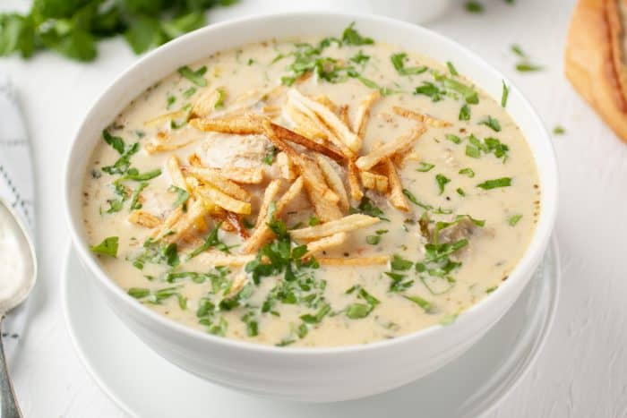

Peanut Soup Recipe
Home

Description
Bolivian peanut soup is made with blended raw peanuts, vegetables, and your favorite protein. It's served with homemade fries and accompanied by slices of French bread.
This light broth is very versatile, although the main ingredient is peanuts, you can vary the vegetables, protein, and carbohydrates depending on what you have on hand. You can serve it as a first course or a main course if you add extra ingredients like more rice or noodles.
Ingredients
- Peanuts
- Red Onion
- Garlic
- Green peppers
- Fresh parsley
- Chicken
- Carrots
- Salt
- Ground black pepper
- Dried oregano
Steps
- Peanuts should be blended well. It should be creamy and without lumps.
- To make sure that the mixture is creamy, you should scoop a little bit into a spoon, and rub it between the tip of your fingers. If it feels gritty, you need to continue blending.
- If the peanuts are not blended well, when you eat the soup it seems that those bits get stuck in your throat and make you cough and almost choke. We don't want a bad experience associated with this soup.
- Once the peanuts are blended, continue sealing the chicken and then sautéing the vegetables.
- Almost every Bolivian meal starts with an ahogau, which is simply red onion, garlic, and green peppers sauteed with a drizzle of oil.
- To this the peanut mixture is added, water or chicken broth, and vegetables that need to cook longer like carrots.
- Peanuts need to cook for a long time which helps to thicken the soup.
- After about 20 minutes, add the chicken and other vegetables that take less time to cook, such as peas, and potatoes.
- Bolivians love carbohydrates. Many times this peanut soup has potatoes, noodles/rice, and is served with homemade fries and a piece of bread or boiled cassava. So you have several options.